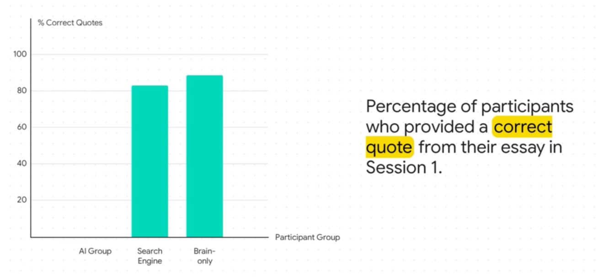

Learning
with AI
Work with it, don't hand it off.
Julien Morice · PracTice team
Institut Mines-Télécom Business School
Two quick
questions
Get your phones out. It's the only time this session I'll ask you to.
Nobody pays for a gym membership to watch a machine lift the weights for them.
The effort is the service. For your coursework, it's exactly the same.
Cognitive debt

Three groups write an essay. A few minutes later, they're asked to quote a passage from it.
Kosmyna et al., MIT Media Lab, 2025.
Preliminary results, small sample.
Understanding
is not
learning
The illusion of learning: believing you have learned because you have understood, without putting in the effort that makes it stick.
You don't defend a text.
You defend a line of thought.
AI will never trip you up on the hand-in. It will trip you up when you have to defend it out loud.
Hand it off / Work with it
| Handing it off to AI | Working with AI | |
|---|---|---|
| Revising | "Summarise this lecture for me" | "Quiz me on this lecture" |
| Researching | Copy the answer | Ask for the sources, then open them |
| Writing | Generate the text | Write it, then have your draft critiqued |
| Understanding | "Explain it to me" | "Let me explain it, you correct me" |
The left column produces a deliverable. The right column produces learning. Both take the same amount of time.
3 ways to write your prompts
Deep research
Worth it
- A briefing
- A comparison
- A literature review
A waste
- A definition
- A date
- A quick fact-check
Deep research
A briefing, a comparison, a literature review: what a well-framed deep-research query looks like, from the opening question to the result.
An unverified deep-research report isn't work done. It's work delegated.
It only answers from your course material.
Learning with Gemini Notebook
Getting quizzed on your own course material. The audio overview to listen to on your commute. The mind map to see the structure of a whole course on one screen.
It makes material you have worked on easier to revise. It does not turn material you have ignored into material you know.
Speaking rather
than typing
We speak about three times faster than we write.
Typed vs dictated
With Wispr Flow. Voice isn't a comfort gadget. It's what makes a rich prompt accessible without effort.
Start with what costs nothing
Your system's dictation
On Mac, native dictation. On Windows, Windows key + H. Zero install, works everywhere, including inside the ChatGPT window.
Voice mode in the mobile apps
ChatGPT and Claude on your phone. Nothing extra to install, nothing to pay.
Wispr Flow, VoiceInk
Dedicated tools that transcribe better and faster. Limited free plan, student pricing. A personal choice, not a recommendation to buy.
Your system's dictation is more than enough for this year.
You can hold a conversation with AI, out loud.
Talking with ChatGPT out loud
Voice mode in action: a question asked aloud, a spoken answer, a follow-up, an interruption. The conversation keeps its thread, without starting over.
The same principle exists elsewhere, with other AIs. ChatGPT is the example here because it's the most widespread.
Turn AI into a Socratic tutor
You are my examiner on [topic]. Question me, one question at a time. Never give me the answer before I have answered. After each answer: tell me what's right, what's missing, then ask the next question, raising the difficulty. Stop after 10 questions and give me a summary of what I should revise first.
ChatGPT and Gemini also offer a ready-made Study mode, free. But the prompt doesn't depend on any menu.
Combining several AI tools and their harnesses
A full workflow: the prompt is dictated aloud with Wispr Flow, then the result — here, an image — is produced by combining Work on the ChatGPT side and Cowork on the Claude side, two harnesses installed locally on the machine.
The harness is what surrounds the model and makes it usable: file access, memory of the task, available actions. The question is no longer which tool to choose, but which harness.
Before you pay, check what you're already entitled to
online
Free for everyone
Everything we've just seen. The bulk of what you'll use this year.
Free because you're a student
LinkedIn Learning provided by the school, and the vendors' student offers. Card required and automatic renewal: note the date.
Behind the wall
The agents that work on your files. It's coming, it's not essential this year.
And before wanting a better tool, check that you're actually using the one you have.
What we've seen, on one page
Role, context, task, format
Or shorter: "ask me three questions before answering".
Get yourself quizzed
"Quiz me on this course, one question at a time, without giving me the answer."
Gemini Notebook
Closed corpus, clickable citations. Audio overview and mind map.
Deep research
A briefing, a comparison, a literature review. Never without opening the sources.
Speak rather than type
Three times faster. Your system's dictation is enough.
Voice mode
It answers aloud, you interrupt, you follow up: the thread holds. Free in the mobile app.
Your questions
The Wooclap wall is open.
Julien Morice · Marine Carayon · Sivani Satkunavel
PracTice team — IMT Business School